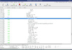

Learn


What is OCaml? OCaml is a general purpose industrial-strength programming language with an emphasis on expressiveness and safety. It is the technology of choice in companies where a single mistake can cost millions and speed matters, and there is an active community that has developed a rich set of libraries. It's also a widely used teaching language. Read more.
Code Examples
(* If [l] is the list [e1;…;eN] *)
(* e1 +. … +. eN *)
List.fold_left ( +. ) 0. l
(* e1 *. … *. eN *)
List.fold_left ( *. ) 1. l
(* e1 && … && eN *)
List.fold_left ( && ) true l
(* Reverse: [eN;…;e1] *)
List.fold_left
(fun r e -> e :: r) [] lTutorials & FAQ
Books


There are a number of excellent books, with two new titles published in 2013.
Online Courses, Slides & Videos
A massive open online course (MOOC) entirely centered around OCaml is now available, and runs once a year!
Learn more, and register now on the FUN platform!
An invited talk by Xavier Leroy explaining the current state of OCaml at the OCaml Users and Developers Workshop 2014 in Gothenburg, Sweden (PDF slides, Video).
A guest lecture given by Yaron Minsky of Jane Street about how to program effectively in ML. The talk was given as part of the intro computer science class at Harvard, CS51, where the students had spent much of the semester programming in OCaml.
Industrial Users
 Jane Street is a quantitative
proprietary trading firm with a unique focus on technology
and collaborative problem solving. Almost all of our
systems are written in OCaml: from statistical research code
operating over terabytes of data to systems management tools
to our real-time trading infrastructure. And those systems
are deployed at real scale: on an average day, our trading
represents between 1% and 2% of US equity volume.
Jane Street is a quantitative
proprietary trading firm with a unique focus on technology
and collaborative problem solving. Almost all of our
systems are written in OCaml: from statistical research code
operating over terabytes of data to systems management tools
to our real-time trading infrastructure. And those systems
are deployed at real scale: on an average day, our trading
represents between 1% and 2% of US equity volume.
 To
handle their huge PHP codebase, Facebook developed
pfff,
a set of tools and APIs to perform static analysis,
dynamic analysis, code visualizations, code navigations,
and style-preserving source-to-source transformations such
as refactorings on source code. They also designed
Hack, a new statically typed
programming language for HHVM, a fast PHP runtime.
See Julien Verlaguet's
CUFP talk and
slides.
To
handle their huge PHP codebase, Facebook developed
pfff,
a set of tools and APIs to perform static analysis,
dynamic analysis, code visualizations, code navigations,
and style-preserving source-to-source transformations such
as refactorings on source code. They also designed
Hack, a new statically typed
programming language for HHVM, a fast PHP runtime.
See Julien Verlaguet's
CUFP talk and
slides.
Success Stories
 Unison is an innovative two-way file synchronizer stemming from the latest research. It is resilent to failures and runs on Windows as well as most flavors of Unix, including MacOSX. OCaml helped the authors to “organize a large and intricate codebase”.
{kind=link}
 Developed by LexiFi, the Modeling Language
for Finance (MLFi) is the first formal language that
accurately describes the most sophisticated capital
market, credit, and investment products. MLFi is
implemented as an extension of OCaml.
Developed by LexiFi, the Modeling Language
for Finance (MLFi) is the first formal language that
accurately describes the most sophisticated capital
market, credit, and investment products. MLFi is
implemented as an extension of OCaml.
FFTW
is a very Fast Fourier Transform library developed at MIT
that competes with vendor-tuned codes
while remaining platform independent.
The code is generated by genfft,
written in OCaml, that
“discovered” algorithms that were previously unknown.
It was awarded the
J. H. Wilkinson Prize for Numerical Software
that rewards software that "best addresses all phases of
the preparation of high quality numerical software."